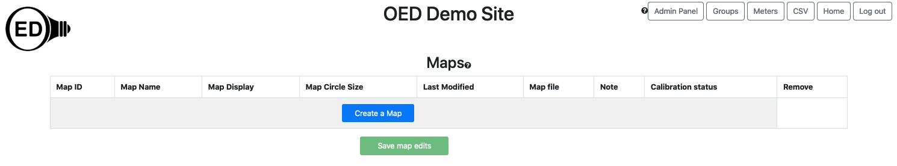
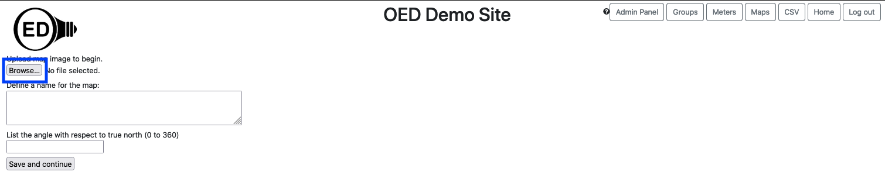
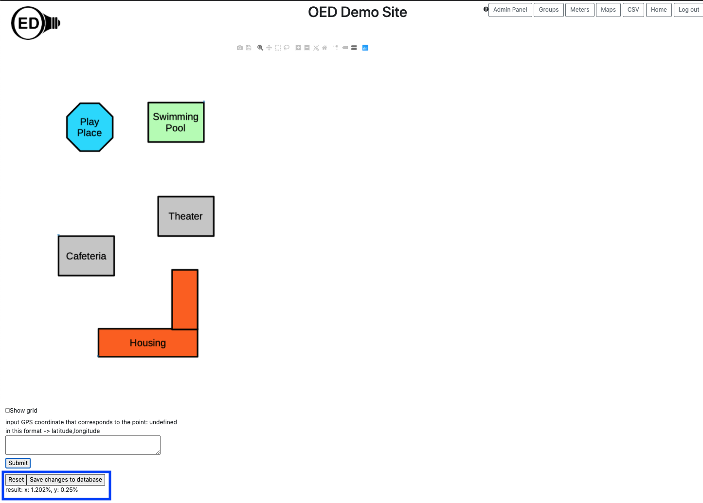
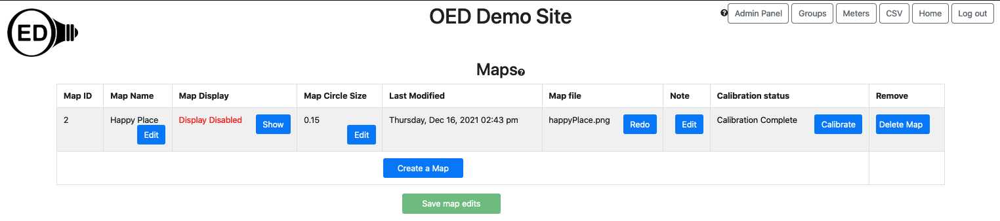
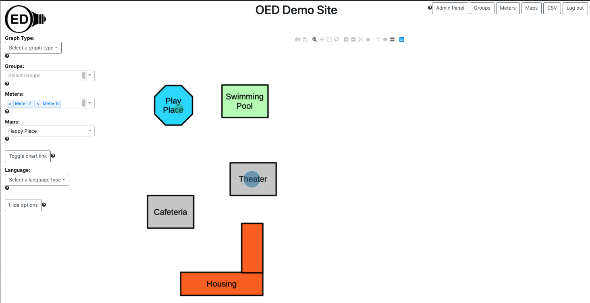
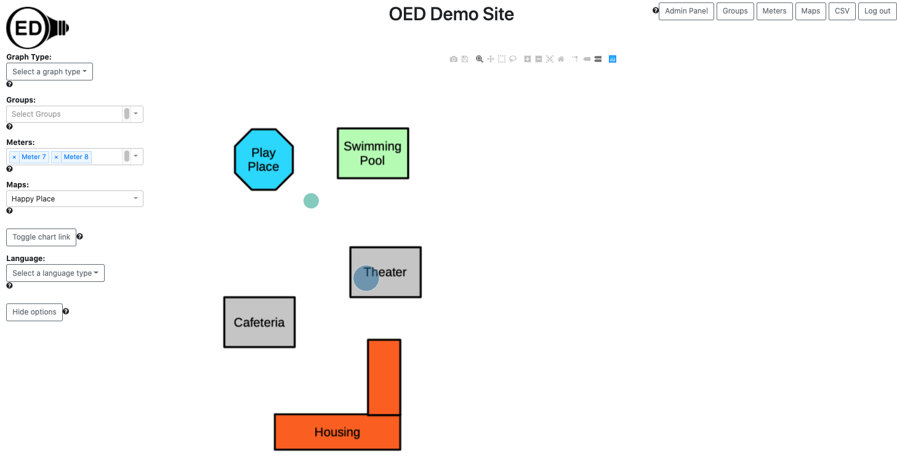

OED Documentation
Map Management
Version V0.8.0
The latest version of the documentation is V1.0.0.
Documentation overview
Admin documentation
Information
Site Management
Data Acquisition
Site Installation
User documentation
Documentation versions for this page
These features are only available to select people who oversee the OED site (called admins) so this information is not usually of interest to a general user.
Overview
See the map graphic page for general information on OED and maps. Note that unlike many systems, using maps in OED does not require any additional software nor the use of GIS. Instead, you load a graphical image you want to use as a map. This can be anything from a real map, a stylized graphic with buildings and features of interest to an arbitrary graphic. Once loaded, you calibrate this map by informing OED about a few GPS coordinates for items on the map. OED will automatically allow users to place meters on a graph as long as you have input the GPS data for that meter. OED allows sites to have as many maps as they wish and maps can overlap. For example, you could have maps with two different sites and a map that zooms in to show details of one of the sites.
This greatly simplified system is based on a simple assumption that the map is flat. In actuality, the world is a sphere so that it is curved. However, over modest distances, it is effectively flat. This is why local maps don't appear warped but ones of the entire global make some areas look much larger than they really are. Since most maps involving a site are over very modest distances this works very well. If you want a large geographical area map then see circle placement below on making this work. Note that you can have different maps that are very far apart without any issue. It is only a single map covering a large area that causes issues.
For this system to work, OED needs to know the rotation of each map from true north. This allows OED to align the real world longitude and latitude (used in GPS) with the map graphic. OED internally stores this rotation as the angle from true north on the map graphic to straight up on the map graphic going in the counterclockwise direction. OED can then use this angle to properly calibrate the map and place items on the map (see below). While this is fully functional within OED, there is not yet an admin interface to set the rotation angle. We plan to soon add the needed interface so the admin can set the rotation angle for each map. When that is done, this help page will be enhanced to explain how to get the rotation angle and place it in OED for a given map. Until that time you should contact OED for help in dealing with rotated maps.
Usage
If you click on the "Maps" button in the top, right of the main OED screen you will go to the maps page shown below. This shows the page when no maps are on the site. Click the blue "Create a Map" button to begin the process of uploading a map. 
You should now be on the page shown below. Click on the "Browse ..." button (highlighted with a blue box) to open a standard web browser pop up to select a file. Choose the graphical image of your map. Note the image can be of types JPEG or PNG (the file extension does not matter but the contents must be one of these two image types). OED will allow you to choose other types of files and tell you the upload is complete but you will find the file image does not appear on the next step. There are many programs/apps that will allow you to convert to one of these two types of graphical images. Once you have uploaded the map image, use the box immediately below (labeled "Define a name for the map:") to name your map. Note this is the name that a user will see (it can be edited later). In this example, "Happy Place" was used. Finally, you need to input the angle of the map relative to true north. To properly display maps, OED needs to know the vector that points to true north on the uploaded map. This is the clockwise angle between straight up on the map image you upload and true north. See the discussion on true north angle below for setting this value on a rotated map. When you are ready, click the "Save and continue" button to complete this step. 
You should then see the confirmation popup shown below. The exact look differs depending on your web browser. It may or may not show the URL and it will definitely differ from localhost:3000 (special URL for development). Click "OK" to continue the process. 
You should now be on the map calibration page shown below. This page allows you to enter the GPS coordinates for places on the map so OED can map locations on the map to locations on the globe (world map). You should place your curser that will appear as a "+" symbol at the point on the map that you wish to enter the GPS coordinate for. As you move your mouse, you will see the x and y coordinates on the map grid which span from 300 in the x-direction to 500 in the y-direction. These can be less depending on the aspect ratio of your map since they might be clipped in one direction to make the map fit the grid coordinate system. In the figure below, the cursor was placed at grid coordinate (277, 461) and then the mouse was clicked. (Unfortunately the image cannot pick up the "+" where the cursor was located.) This point was chosen since we assume that in a real situation we knew the GPS coordinate for the top, right corner of the "Swimming Pool" building in the image. 
As shown in the figure above, when that point was clicked, a message appeared below the map (inside the blue box used for highlighting) that says "input GPS coordinate that corresponds to the point: x: 277, y: 461 in this format -> latitude,longitude". This confirms that the coordinate clicked was (277, 461). As the message states, you need to enter the GPS coordinate for this point on the map as a latitude, longitude pair separated by a comma. This is a common format for GPS coordinates but do not include parentheses when you enter the GPS value such as they are written above. You enter the GPS value in the box below this message. For this example, the GPS coordinate entered was 40.00461, -87.99723. The box where this was entered is inside the blue box used for highlighting as shown in the next figure. 
Once complete, you click the "Submit" button below the box for GPS (inside the blue box used for highlighting). This leads to the figure below. The text at the bottom of the web browser window, "result: Need more points" (highlighted with a blue box) indicates the result. It is stating that there are too few points to complete the calibration. OED needs a minimum of three points to calculate the error and possibly complete the calibration. Also note that the message will change the GPS value to "undefined" so it becomes "input GPS coordinate that corresponds to the point: undefined in this format -> latitude,longitude" after you submit a point. This is to indicate that a new point has yet to be chosen. 
You now need to repeat the steps above to enter more calibration points. You can click anywhere on the map where you know the GPS coordinates. It is okay to click more than once to replace the point clicked with a new one as long as it is before you "Submit" the GPS value. See below for suggestions on points to use and how to get the GPS coordinates for points on the map. Once you have entered at least three calibration points, OED will give you an estimate of the overall calibration result (inside the blue box used for highlighting in the figure below). 
In this example, the result is "result: x: 1.202% y: 0.25%" (inside the blue box used for highlighting in the figure above). (Note the points used were deliberately shifted a little bit so a small error is shown.) If you are satisfied with the result, you click the "Save changes to database" (inside the blue box used for highlighting). See below for a discussion of the Calibration Result. If at any time you want to begin the calibration process again, you can click the "Reset" button. If the calibration is a little worse than you want, you can try to add more points to improve the error but this is not guaranteed to work. Once you save the calibration, you are taken to the Admin Map Viewing page that is shown below for a single map. If you want users to be able to see the map then make sure "Display Enabled" is shown. It is best to verify that items are showing up in the correct places before you reveal the map to users. Note you can recalibrate a map from this page. There are other values you can set and see that are described on the Admin Map Viewing page. 
Once you set the GPS of meters, you can see their values on the map. (See the map graphing page for more information.) If you find that the circles are not showing up at the desired points, then see the section on circle placement issues below.
You can repeat this process for as many maps as you want.
True north angle
To properly display maps, OED needs to know the vector that points to true north on the uploaded map. This is the clockwise angle between straight up on the map image you upload and true north. If your map image is oriented to north at the top then the angle is 0. If not, you need to determine the angle. For example, suppose the Happy Place map used above was rotated 30 degrees clockwise. This would give the following image: 
Let's assume the original map was oriented to true north. The arrow labeled true north shows this direction. The other arrow labeled straight up points directly to to top of the image (and is parallel to the corresponding sides of the image). The pink arrow labeled angle is the angle between the two arrows and the direction indicates the direction of the OED needed angle. In this case the angle is 30 degrees from straight up to true north. You would enter this value for the angle when inputting the map. Note that the GPS coordinates you enter for any meter or group is the actual one and is not changed by this rotation angle.
Note that normally you have a rectangular image that is oriented to how people view your organization in this map. Thus, you would not normally rotate the map image as was done here for example purposes. Instead, you use the angle to tell OED what is going on.
So, how can you get the angle needed. Sometimes the person or group that created the image of your organization knows this value, esp. if it was created with a GIS system. If not, you can use a mapping program on the web (such as Google Maps). These generally put true north at the top. If you take a screenshot of the area on the mapping program you want, you can then rotate the image until it aligns with the one you want to upload into OED. The angle that you needed to rotate the map is the value OED needs. Please note that some graphics programs/descriptions rotate the image and some rotate the coordinate system so you should be careful when getting the value from a graphics program. These values are just negatives of each other so checking if it follows the image above tells you if you need to negate the angle value. If the graphing does not produce the desired result, you may need to adjust this angle.
Choosing calibration points and finding the GPS value
OED uses the distance between calibration points to determine the quality of the points (called the "result" above). Spreading the points around the map increases the distance between the points. This is more likely to lead to correct placement of points around the entire map. If possible this should be done but not if it means you cannot get accurate GPS values for each calibration point entered.
You can determine the GPS value of the calibration points in any way you wish. A way that is often accurate and easy is to use an online mapping site that contains an image that allows you to locate the same points that are contained in the image you will use inside OED. You can then click on that point on the map to get the GPS value. While OED does not endorse any particular online map, a popular one is Google Maps. With this you can left click on any point on a map to reveal information about that point. The first one is the GPS coordinates. If you right click on the GPS coordinate it will copy it to your clipboard. You can then paste this value into the OED box to input GPS coordinates during the calibration steps described above. Another technique is to physically go to the point on the map and use a cell phone application that shows your current GPS location. Whatever technique you use, it is important to get accurate values so your calibration is of high quality.
Calibration result
OED gives a result that provides an idea of how far off the calibration points are from each other. This may give you an idea of how accurately OED will place circles on the map. For example, three calibration points were entered on the map above where each one was changed by +/- 0.0001, which is changes in the 6th digit. This was done so the first calibration point had latitude and longitude increased by this amount, the second subtracted by this amount and the third had latitude increased and longitude decreased by this amount. As such, it was somewhat random if the value increased or decreased. For example, 40.00461, -87.99723 for the first point became 40.00471, -87.99713. This lead to a result of "result: x: 15.471%, y: 4.356%". This is the example used in the figure below. If you map circles that should be directly on "Play Place" and "Theater" you get the following. As seen, they have moved a little to the more accurate calibration above but are in the correct general place. 
If we change so that the each value is +/- 0.001 as done above then the result is much worse. The result is "result: x: 76.423%, y: 31.293%". The result of mapping is shown in the next figure where there are much more noticeable shifts. 
If we increased the change even further then the circles would shift even more and might eventually be off the map. When placement is poor, you need to recalibrate the map.
Note that the error may not always indicate how poor placement will be. If every point was shifted a positive amount of +0.001 then OED will not find a calibration error due to the systematic shift but items placed on the map will be changed (assuming there is not a similar error in where meters are located). This example gives a result of "result: x: 0%, y: 0%" and the graphic shown next. Here the "Play Place" meter is no longer on the map. 
There are many possible reasons that the calibration might be off and we discuss several now. First, it is easy to type in the wrong value for a point. If this happens then correctly reentering the calibration values again will fix the issue. Second, a value for a calibration point is wrong. While a similar result to the first issue, it means rechecking each point to see which one(s) might be off. Third, the accuracy of the points is too low. This requires using another technique to get the values. This can happen, for example, if the map you used to get the GPS coordinates has features placed at a different location than on the map you uploaded to OED. It could also happen because manually read GPS values (such as going to a place and using the value shown of your cell phone) are off. This is due to the inherent accuracy of the device in getting the GPS coordinate or standing in the correct location. Finally, it is possible that the true north angle is off. This will generally lead to items not showing up on the map and/or being off across all meters/groups. While many issues can happen, the OED project found that getting the correct value is usually possible and led to good placement on the map. Getting a good calibration is the easiest way to place items on the map. See the next section for ideas on fixing poor placement of the circles on the map.
Circle placement issues
If you have done the best you can to calibrate the map but you still have circle(s) in the wrong place then you can manually fix them in the meter GPS value. OED only uses the GPS value for placing items on maps so fudging this value does not have other consequences or lead to incorrect results. This is usually easiest if the circles are reasonably close to the desired location on the map. Going back to the first calibration error example where it was +/-0.0001, we can see that "Play Place" is a little off but "Theater" seems fine. We notice it is somewhat to the down and right from the middle of that building. Looking at GPS values for this map indicates that as you go up the longitude gets larger and as you go left the longitude gets smaller (more negative). The correct meter GPS for "Play Place" is (40.00419, -87.99916). Noting that the GPS for "Theater" is (40.0027, -87.9975) we know that the changes needed are small so we start with (40.00469, -87.99966) (changed by 0.0005). By using the Admin Map Viewing page, the GPS value was changed for "Place Place" to this value. This moved "Play Place" much too far up and left so we now tried (40.00420, -87.99917) but the shift was too small. Next we tried (40.00429, -87.99926) and this worked fairly well as shown in the next figure. We could have done some more adjustment to slightly shift the "Play Place" circle if we wanted. 
One thing to note is that this process is only done once when a new map is loaded. After that, any user will see the correct result. Also, once you move one point on the map it becomes clearer the amount needed for other circles so it usually takes less time.
There are circumstance that can make it impossible to modify the meter GPS to get it in the correct place on the map. One is if the needed correction means the GPS value goes outside allowed values then OED will not allow the entry of this GPS value. This should only happen if the calibration is off significantly and should be rectified if the map calibration is redone with greater accuracy. A second is if two maps overlap in area so changing the GPS of a meter causes one map to be fine but another now has it in the wrong place. Proper calibration is the solution in this case.
Details
None at this time.